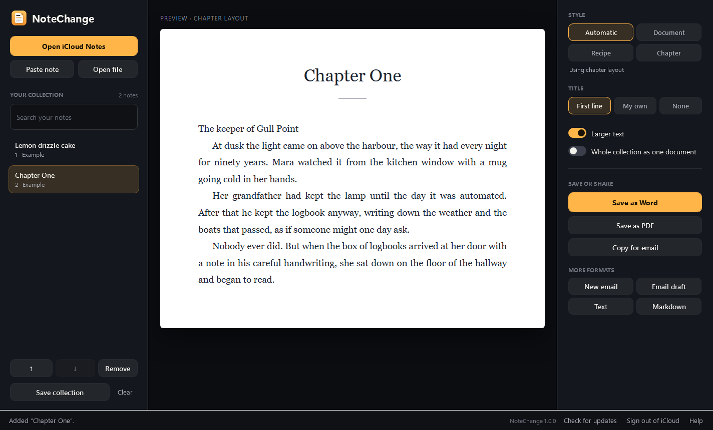
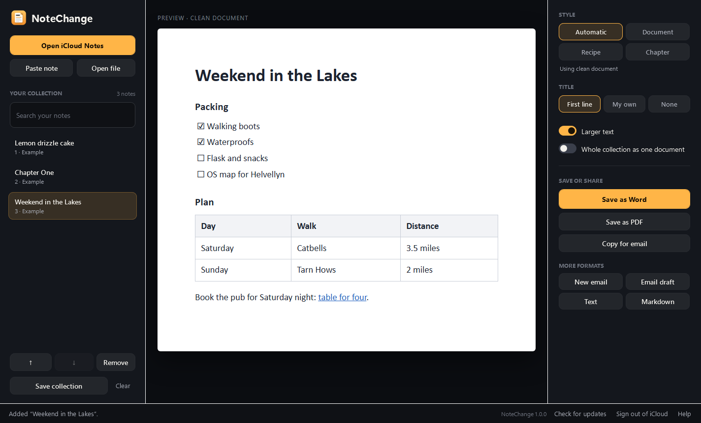
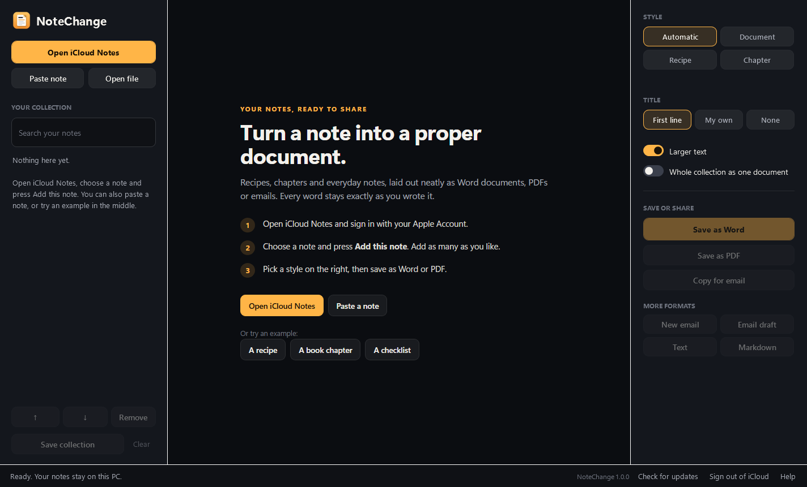

From a note on your phone to a document you can send.
NoteChange opens iCloud right inside the app. Sign in once, pick a note, and it's ready to save.
Open iCloud Notes
Sign in on Apple's own iCloud page, with two-factor codes and device approval working as usual.
Add this note
Open a note and press one button. Keep going to collect a whole cookbook, a story or a project.
Save as Word or PDF
Pick a style, check the preview and save. Or copy it straight into an email.
Serves 8 · about an hour
Ingredients
• 225 g soft butter
• 225 g caster sugar
• 4 eggs
Method
1. Heat the oven to 180°C
2. Beat the butter and sugar…
Lemon drizzle cake
Ingredients
- 225 g soft butter
- 225 g caster sugar
- 4 eggs
Method
- Heat the oven to 180°C
- Beat the butter and sugar…
A layout that suits the note.
Automatic looks at what's in your note and picks the right style. You can always choose another.
Recipes
Ingredients, Method, Notes and Serves become proper headings, so a recipe reads like it came out of a cookbook.
- Bulleted ingredients and numbered steps
- A neat rule under the title
- Build a family cookbook from a collection of notes
Book chapters
Writing a story on your phone? Chapter style sets it like a printed book.
- Serif type, justified text and indented paragraphs
- A centred chapter title
- Every chapter starts on a new page when you export a collection

Checklists and tables
Packing lists, plans and to-dos keep their ticks, headings, tables and links.
- Ticked and unticked items stay as they were
- Tables come across with their header row
- Links still work in Word, PDF and email

Getting started
NoteChange shows you what to do the first time you open it, and you can try it with an example before signing in.
- Try a recipe, a chapter or a checklist
- Paste a note from any app, or open a text file
- Your choices are remembered next time

Your notes stay yours.
NoteChange has no servers and no accounts. It talks to iCloud to show your notes and to GitHub to check for updates. That's it.
Everything on your PC
Layouts, previews and exports all happen on your computer. Previews are built in memory.
Apple handles sign-in
You sign in on Apple's own page. NoteChange never sees your password, and Sign out removes everything.
Read-only
NoteChange only reads the note you choose, when you press the button. It never changes anything in iCloud.
No rewriting
No AI and no summaries. It lays your words out; it never changes them.
Read the full privacy notes.
Up and running in a minute.
- Download NoteChange-Setup.exeIt's about 70 MB and includes everything NoteChange needs.
- Double-click itNo admin rights needed. It installs just for you and adds NoteChange to the Start menu.
- Open iCloud NotesSign in, open a note and press Add this note.
What you need
- Windows 10 or 11, 64-bit.
- An Apple Account with Notes switched on in iCloud. Or skip iCloud and paste notes in.
- Microsoft Edge WebView2, already part of Windows 11 and almost every Windows 10 PC. Setup tells you if it's missing.
Updates install with one click from inside the app. See the user guide for the details.
Good to know.
Is NoteChange free?
Yes. It's free and open source under the MIT licence.
Will it change my notes?
No. NoteChange only reads the note you choose. Nothing in iCloud is changed, moved or deleted, and the words in your documents are exactly the words in your notes.
Some of my notes don't show up.
Notes kept "On My iPhone" or "On My Mac" aren't stored in iCloud, so they don't appear on iCloud.com. Copy them and use Paste note instead. Locked notes need unlocking in iCloud first.
What about pictures and attachments?
Pictures come across into Word, PDF and email drafts. PDFs, audio, sketches and other attachments stay in Apple Notes, and NoteChange tells you when a note has one.
I use Advanced Data Protection. Will it work?
Yes, once you allow web access to iCloud. iCloud.com asks you to approve it from one of your trusted devices.
Is there a Mac or iPhone version?
Not at the moment. NoteChange is for Windows 10 and 11.
Is NoteChange made by Apple?
No. It's an independent app. It reads notes through Apple's iCloud web page, not an official Apple API, so if Apple changes that page NoteChange may need an update. Paste note always works.
Something isn't working.
Please open an issue on GitHub and describe what happened. Don't include your Apple password or anything private.